Tours Virtuais
Você chegou ao paraíso dos viajantes! Na presente seção estão presentes ínumeras possibilidades de tours vistuais que você, professor, pode vir a utilizar em algumas de suas aulas! As opções de passeios vituais são um tanto quanto variadas e vão desde museus até estações de tratamento de água, até porque a Geografia é ampla, flexível, e permite que se trabalhe tais temas aparentemente distoantes. Apertem os seus cintos e... venham passear conosco pela história e pelo planeta! Vòi lá! Observação: para realizar os tours virtuais basta clicar nos icones de bonequinhos com malas nas mãos, que estão à direita das descrições.
A Grande Muralha da China
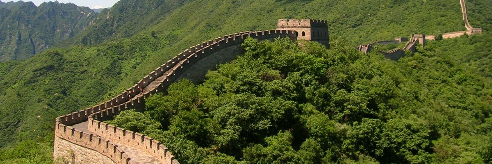Construída entre os séculos 3 a.C. e 17 d.C, a Muralha da China possui 2.300 quilômetros de extensão e mais de 7 metros de altura! A fortaleza foi considerada uma das 7 Maravilhas do Mundo moderno e agora você pode visitar esta maravilha diretamente do sofá de casa!
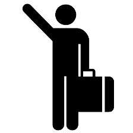Torre Eiffel
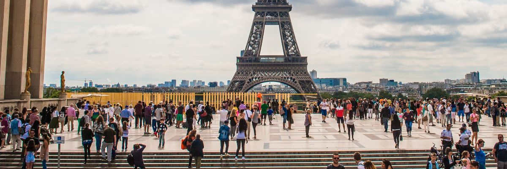Eis aqui um dos pontos turísticos mais visitados do planeta! A Torre Eiffel foi construída - por inclivel que pareça - para uma Exposição Universal realizada em 1889 que celebrou o primeiro centenário da Revolução Francesa. Clique no icone de boneco ao lado e acompanhe a vista da torre !
Estação Espacial Internacional - ISS
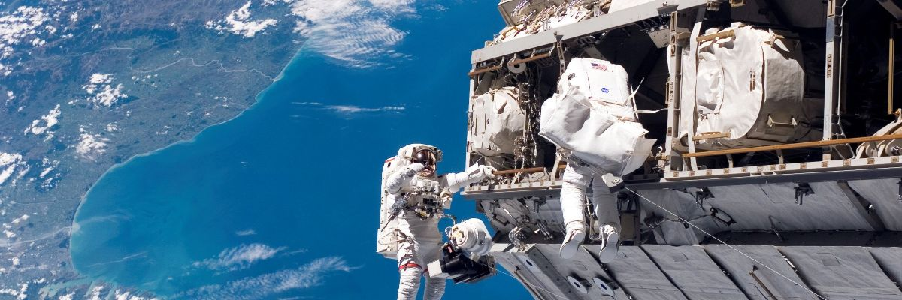Sua construção iniciada em 1998 e terminada em 2011, a International Space Station foi uma das obras mais complexas da modernidade. Neste tour virtual você poderá acompanhar o resultado do projeto, e experimentar uma vida de astronauta por um dia.
Nova Delhi (Índia)
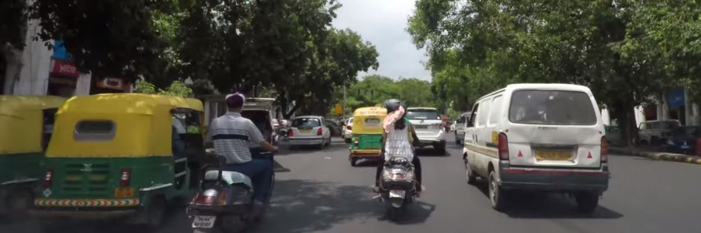Passeie aleatóriamente pelas ruas da capital indiana, desfrute do caos de seu trânsito e viva uma experiência única! Nova Delhi é a segunda cidade mais populosa do planeta com mais de 25 milhões de habitantes, perdendo apenas para Tóquio.
Ruínas de Macchu Picchu
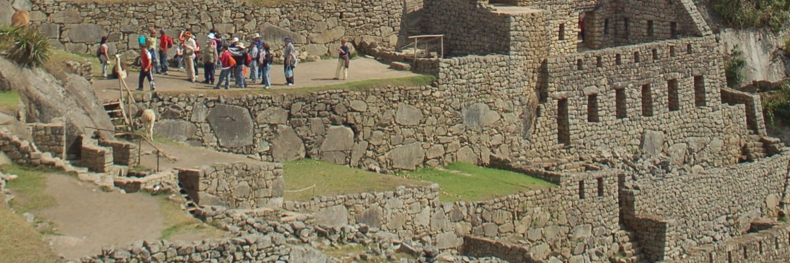Conhecida como 'a cidade perdida dos Incas', Machu Picchu foi construída durante o século XV e servia ao povo como um santuário e ao imperador Pachacuti como residência. A 'Cidade Perdida' fica a 2.430 metros de altitude e localiza-se no Peru, em plena cordilheira dos Andes!
Brasília/DF
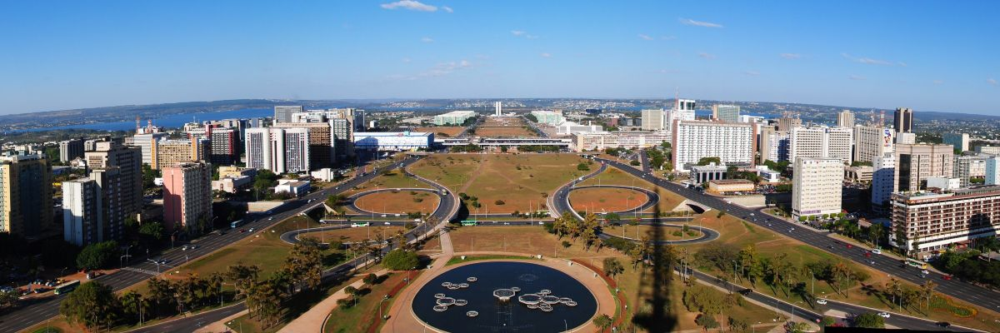Inaugurada no dia 21 de abril de 1960 a capital federal foi uma 'briga comprada' pelo então presidente Juscelino Kubitschek. Mas foi uma 'briga' que valeu à pena, bem planejada por Lúcio Costa e com construções belíssimas projetadas por Oscar Niemeyer, a capital federal chama a atenção de quem a visita.
Regiões do Continente Africano
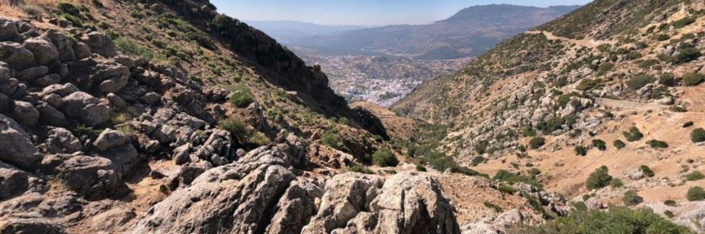Um maravilhoso tour virtual contemplando paisagens das regiões norte, central, ocidental, oriental e austral do continente africano. Montado por Danilo Barros e disponibilizado no site da Universidade de São Paulo, o passeio é um tanto quanto interessante e dinâmico!
Ouro Preto/MG
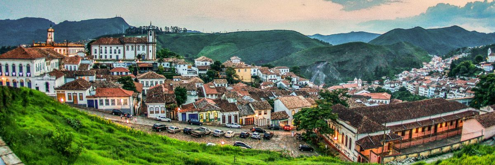Fundada em 1698 por bandeirantes paulistas, Ouro Preto levava então o nome de Vila Rica de Albuquerque. A cidade, que surgiu por conta da descoberta de ouro, tornou-se sede da Capitania das Minas Gerais em 1711. Atualmente é muito visitada por turistas que apreciam de história, gastronomia, geografia e... carnaval! Sim, o carnaval de Ouro Preto é muito bom.
Museu do Amanhã
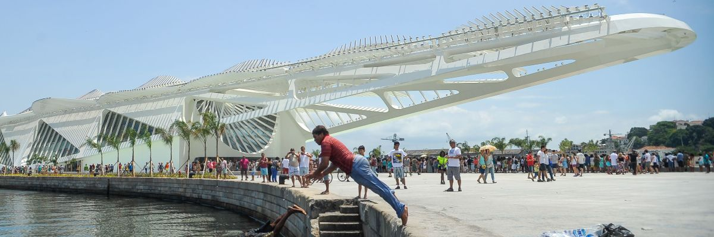Inaugurado no dia 17 de dezembro de 2015, e localizado Praça Mauá(zona portuária do Rio de Janeiro), o Museu do Amanhã é um museu de ciências interativo. Concebido pelo arquiteto espanhol Santiago Calatrava, o museu futurista faz parte de um projeto de revitalização da cidade.
Stonehenge
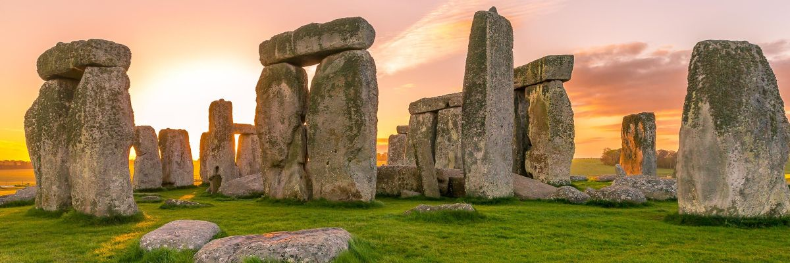Datado de 3.100 anos antes de Cristo, o monumento que fica na Grã-Bretanha mais precisamente na cidade de Salisbury, é formado por blocos de rochas de aprox. 50 toneladas! Recentemente foi descoberto um cemitério próximo ao monumento de rochas, o que levantou teorias.
Museu de História Natural
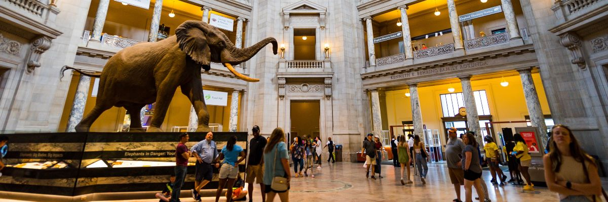Fundado em 17 de março de 1910 o Museu Nacional de História Natural dos Estados Unidos, o museu guarda consigo um acervo gigantesco de mais de 125 milhões de rochas, fósseis, ossos, insetos e outros artefatos produzidos pelo homem.
Torre de Belém
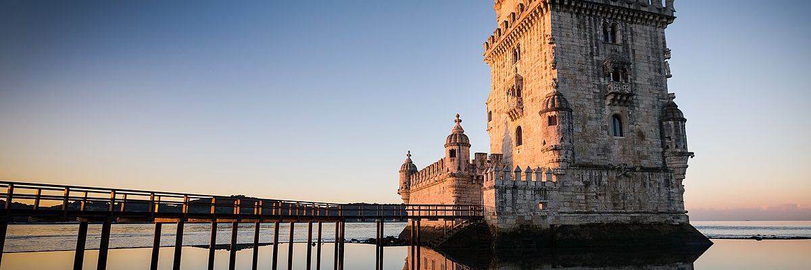O ponto turístico mor de Portugal diretamente para a sua casa! A Torre de Belém, localizada em Lisboa, foi erguida estrategicamente na margem norte do rio Tejo e tinha como objetivo a defesa da cidade por ataques de embarcações. Sua construção de deu entre os anos de entre 1514 e 1520.
Museu do Holocausto
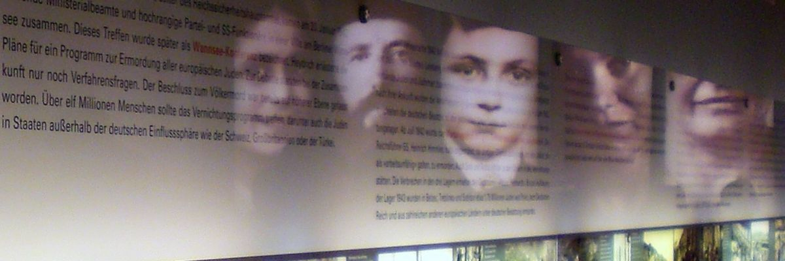Em tempos de neonazismo efervescênte nas redes sociais, nada melhor do que uma dose de história para combater esse mal que vem assolando o Brasil. No museu do holocausto de LA você conhecerá histórias reais de vítimas do maior genocídio da história da humanidade: o holocausto.
Ruínas Valle Dei Templi
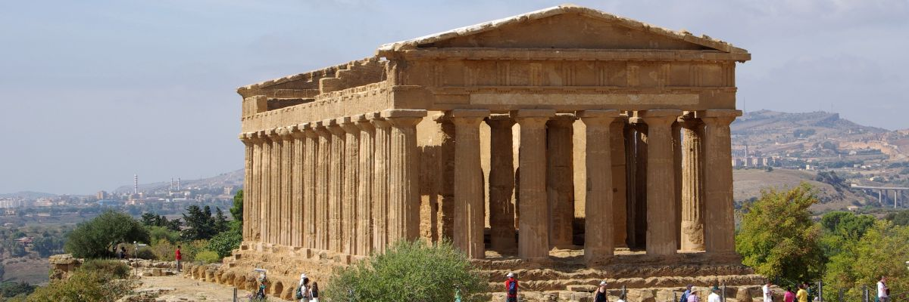Tombado como Patrimônio da Humanidade pela UNESCO, o Vale dos Templos é um parque arqueológico e paisagístico que abriga ruínas de templos gregos. Na visita você conhecerá os templos de Concórdia, Heracles bem como uma necrópolis paleocristã.
Usina de Itaipu
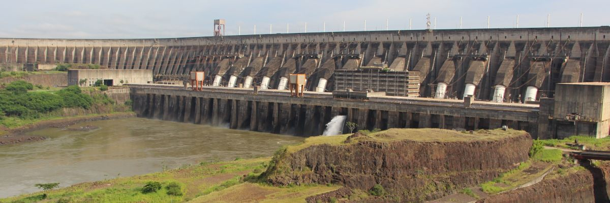Este é um passeio quatro em um! Neste tour virtual você porá conhecer as Cataratas do Rio Iguaçu do lado Argentivo, a usina hidrelétrica binacional de Itaipu, o Parque das Aves, bem como as cataratas do lado brasileiro! É um passeio bem completo especialmente para aulas de geomorfologia.
Estação de Tratamento de Água
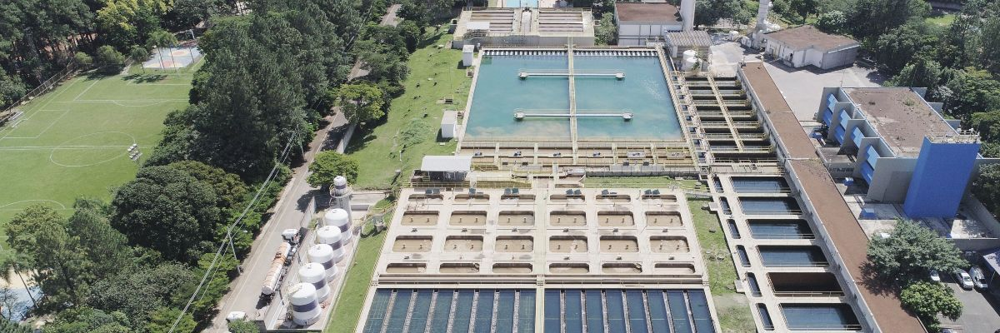Aula de problemas urbanos? Leve seus alunos para dar um pulinho em Campinas/SP e conhecer a solução para um destes: saneamento básico! Neste tour virtural eles poderão conhecer por dentro duas Estações de Tratamento de Água e uma Estação Produtora de Água de Reúso!
Fazenda Cafeeira
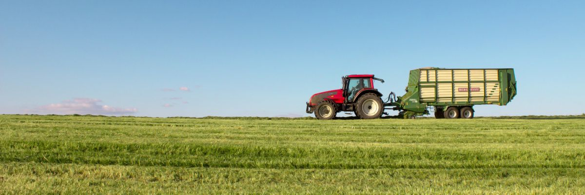Navegue por esta enorme fazenda cafeeira e passeie pelo ciclo do café em uma fazenda. A propriedade é subdividida nas áreas: de colheita, florada, lavoura, beneficiamento, represa, reserva ambiental e terreiro. No tour pela fazenda também é mostrado como são pés de café.
Fazendas Carapreta
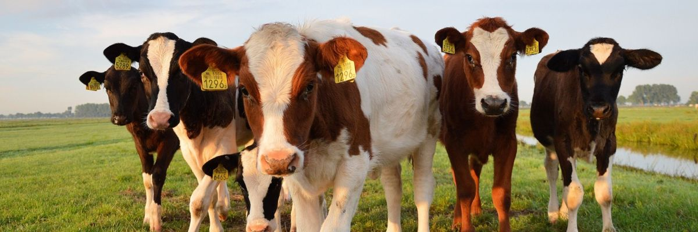Acompanhe como são por dentro duas fazendas de criação de gado (das mais completas!). Nestas você vai encontrar frigoríficos, fábricas de ração, áreas de plantio com irrigação por pivô central, aeroportos, maternidades para bovinos bem como um criadouro de ovelhas da raça Dorper.